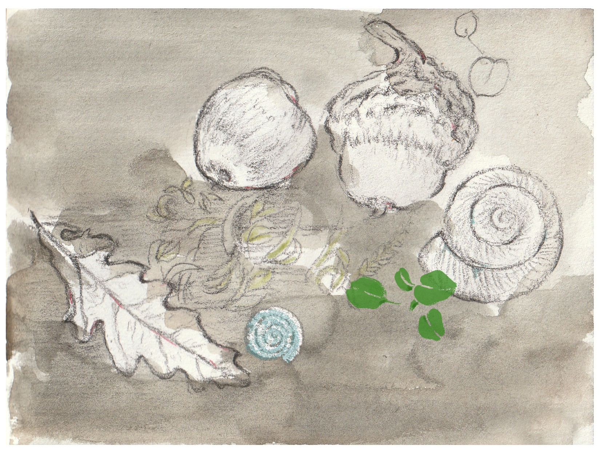

原文稿 |Transcript
Ep.08 片思 | 树林·独立·水
开场 |Opening
嗨, 你好, 这里是 Jojo's Pod。
今天还是独角戏。我有想法做几期访谈节目, 数数看好像也有不少我想邀请来聊一聊的人。但是, 想做的事情太多。这段时间我还在整理自己的个人工作流, 所以还是要继续一段时间的独角戏。
Hi, this is Jojo's Pod.
It's another solo episode today. I do want to make several interview episodes—when I think about it, there are actually quite a few people I'd love to invite for a conversation. But there are simply too many things I want to do. And I'm still reorganizing my personal workflow these days, so… it'll stay solo for a bit longer.
1
我今天来讲个段子：
大概是去年初夏的某一天, 我从附近的公园运动完走回来, 路过一个村子, 看到一片小树林正在被砍伐。我感觉有点难过。
那片树林有几颗很高很大的榆树, 还有很多槐树和杨树, 夏天走过时, 树荫片片, 微风清凉, 有一次我还看到一只胖胖的刺猬慢悠悠地从里面走出来。小树林就这样被砍掉, 从此消失, 又不知道会有多少刺猬, 还有喜鹊和杜鹃, 难寻栖身之处。
正这样想着, 看到前面有两个人在对着曾经的树林, 现在的工地, 指点着谈话；是一位大妈和一位大爷, 看表情不大开心, 所以我也走过去想表达一下惋惜。
几句交谈之后, 我说：是啊, 这些树被砍掉太可惜了...... 大妈愣了一下, 像看傻子似的看着我。我心想, 糟糕, 我又暴露了, 无知, 或者, 豆瓣文艺青年的底色。大妈好像在忍住一些不大好听的话, 停了一下她说, 那倒也不是树的问题..... 我仔细听下去, 果然, 是村民之间土地利益的问题。
旁边那位大爷的表情, 似乎流露出一丝对我发言的理解。但我也还是在稍作礼貌性倾听之后, 让自己悄然遁形。
Today let me start with a little anecdote.
It was around early summer last year, I finished exercising in a nearby park and was walking home. On the way, I passed a small village and saw a grove of trees being cut down. It made me a bit sad.
That grove had several tall, old elms, and many pagoda trees and poplars. In summer, their overlapping canopies made the breeze feel cool and gentle. I even saw a chubby hedgehog slowly waddling out from the woods. And yet, the grove was being cutting down and soon it disappeared. And who knows how many hedgehogs, magpies, or cuckoos will now struggle to find a place to live.
While I was thinking about this, I saw two older villagers standing in front of what used to be the grove—now a stripped patch of land—talking and pointing at it. It was a dama(an older local woman) and a daye(an older local man). They didn't look very happy, so I walked over to share how sorry I felt about the trees being cut.
After a few lines of small talk, I said, “Yeah… it's such a pity that these trees were cut down.”
Dama froze for a moment and stared at me as if I were some sort of idiot.
And I thought, oh great, I exposed myself again,the ignorant me, or, the Douban artsy side of me.
Dama seemed to be holding back some unkind words, paused, then she said, “Well… it's not really about the trees.”
I listened more carefully, and of course—it was about disputes over land interests among the villagers.
The old man next to her had an expression that suggested he sort of understood what I meant. But after a bit of polite listening, I quietly slipped away.
2
前几天我一直在想, 我现在做的事情, 是不是真的有意义, 因为它好像很难被看得到。
如果是做工程师, 完成一个项目, 就会有非常实在的成果能够被看到。做农人也一样, 收获的蔬果谷物, 带来厚实的成就感。
而艺术, 美感, 哲思, 判断力, 这些都似乎是实在的, 却无法被看到。但是我想, 即使是终极的物质主义者, 经过理性的思考, 也不敢断定物质的世界就能等同于真实的世界, 更不用说, 只能被人类看到的物质世界。这里我会想起《Helgoland》(量子物理如何改变世界)那本书里的列宁同志。3
Recently I've been thinking: does what I'm doing now really matter? Because it seems so difficult for it to be seen.
If you're an engineer and you finish a project, you get something concrete—something everyone can see. Farmers too—they harvest their vegetables and grains, and that gives a real sense of accomplishment.
But art, aesthetics, reflection, judgment—these things feel concrete in their own way, yet they resist being seen. Still, even the most die-hard materialist, after some rational reflection, wouldn't dare assert that the material world equals the real world—let alone the part of the material world that is visible only to humans.
Here I can't help thinking of Comrade Lenin in the book HelgolandHelgoland (How Quantum Physics Changed the World, Chinese edition).
3
有一天晚上我忽然顿悟, 或许, 仅仅因为独立(Individuation)1本身, 就已经让这件事具有意义。而尤其是在一个相对落后的系统之中, 就更加具有意义。
这个独立, 与是否处于亲密关系中并无关系；因为即使是亲密关系也会因为是两个完全独立的个体, 才会有更深层更丰富的亲密。
独立也并非意味着与社会隔绝；恰好相反, 正因为处于错综复杂的社会关系中, 才让独立成为可能。一个人的世界, 只会让独立失去意义。
而恰恰是在复杂的社会关系里, 一个人还能不失自己的方向、倾听自己的感受、形成自己的判断, 这让独立本身, 就意味着一种个体生存的勇气, 和一种自由的潜力。
而所有真正能被看见的创造, 大概都从这里开始。
在一个相对缺乏这种传统的环境里, 独立就更显得珍贵, 但也尤为艰难。无论是在个人心理层面, 还是在社会现实中, 都是一个不小的挑战。
可是, 在圣经世界里, 有大卫打败歌利亚2。我猜, 在老庄的版本里, 大卫会是水, 流转前行, 但是同时, 润物细无声。
One night, it suddenly dawned on me that perhaps individuation itself already gives it all meaning. And within a relatively underdeveloped system, it becomes even more meaningful.
This kind of individuation has nothing to do with whether you're in a relationship. Even intimacy needs two fully separate individuals—otherwise you can't have depth or richness.
Individuation also doesn't mean isolating oneself from society. On the contrary, it is precisely because we live within intricate social relations that individuation becomes possible. A world of one's own would strip individuation of its meaning.
And yet, inside all this social complexity, if you can still keep your direction, listen to your own feelings, and form your own judgment—then individuation itself means a form of courage for individual existence, and a potential for freedom.
Perhaps, all visible creation starts right there.
In a place where this tradition is weak, individuation becomes even more precious—and more difficult. It's a real challenge, both psychologically and socially.
In the world of the Bible, there is still David defeating Goliath.
And I imagine that in the Laozi-Zhuangzi version of the story, David would be water—flowing forward, infusing everything gently, without being noticed.
尾声 |Ending
这其实是一个有些私人的话题, 但是我还是想分享出来。如果你也有类似的困惑或者思考, 希望能为你提供一点参考。
秋天的林地上堆满了落叶, 曲线优美, 层层叠叠, 其中还散落着橡子, 还有细碎的小树枝；微黄的绵软的青苔里冒出几片椭圆形的小叶子; 每个人身边都有无穷无尽的美和无数的惊奇等待被发现。I wish you can see it, and enjoy this tiny wonder, everyday, everywhere.
希望你今天就能遇到属于你的那一个小惊奇。
Shalom ([ʃɑːˈloʊm] 希伯来语: 平安、安宁、完整)
This is a pretty personal topic. But I felt it was worth sharing. And if you've had similar confusion or thoughts, I hope this gives you a bit of company.
In the woods during autumn, fallen leaves pile up in gentle curves, layer upon layer. Acorns scatter here and there, along with tiny twigs. From the soft yellowish moss, tiny oval leaves push their way out.
There is endless beauty and countless little moments of awe around each of us, waiting to be noticed. I hope you can see them, and enjoy these tiny wonders, every day, everywhere.
I hope you encounter one of your own little wonders today.
Shalom (Hebrew: peace, wholeness, harmony)
脚注 |Footnotes
1 这里的独立, 虽然与 solitude(独处), independence(经济独立), self-reliance(依靠自己, 偏实用主义), self-standing(自我站立), autonomy(自主性)都有相关, 但最符合当下语境的是 individuation(个体化)。
2 出自《圣经·旧约》撒母耳记上(1 Samuel)第17章
“So David prevailed over the Philistine with a sling and with a stone.” — 1 Samuel 17:50 (KJV)
大卫用机弦甩石, 胜了那菲利士人。
3 延伸阅读：《量子物理如何改变世界》[[原版里的波格丹诺夫与列宁]]